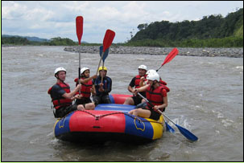

Turismo de aventura en Pastaza, Ecuador
La provincia de Pastaza ofrece variedad de los deportes de aventura:
Rafting
Desde Puyo los agencias llevan los turistas hacer rafting por el río Pastaza vía Baños de Agua Santa y también por el río Anzu en la provincia Napo.
Rafting en Pastaza, Ecuador
El rafting se practica en el río Pastaza, desde el ingreso a parroquia Cumandá hasta Madre Tierra, or la cominided de Puyopungo. El rafting y el kayaking tambien se practica en el río Anzu desde la Comunidad de Boayacu hasta la Ciudad de Santa Clara or hasta su desembocadura en el río Jatunyacu donde nace el río Napo. En niveles mas bajos se practica en el río Arajuno o en el río Puyo.

Kayaking
En los Ríos de Pastaza, como el río Pastaza y el río Puyo. Hay escuela de kayaking con un guía con experiencia profesional.
Canyoning
Guías especializados en canyoning y por las cascadas y canyones de Pastaza.
Canopy tours
En Ecoparque, Puyo ofrece canopy largo 200 metros en dos velocidades. También en la Finca Tres Cascadas, vía Baños.
Bungee jumping
Desde un puente vía Baños de Agua Santa.
Tubbing (boyas)
En los ríos de Pastaza.
Salto libre
Desde avión, salen de aeropuerto de Shell.
Escalar, acenco |